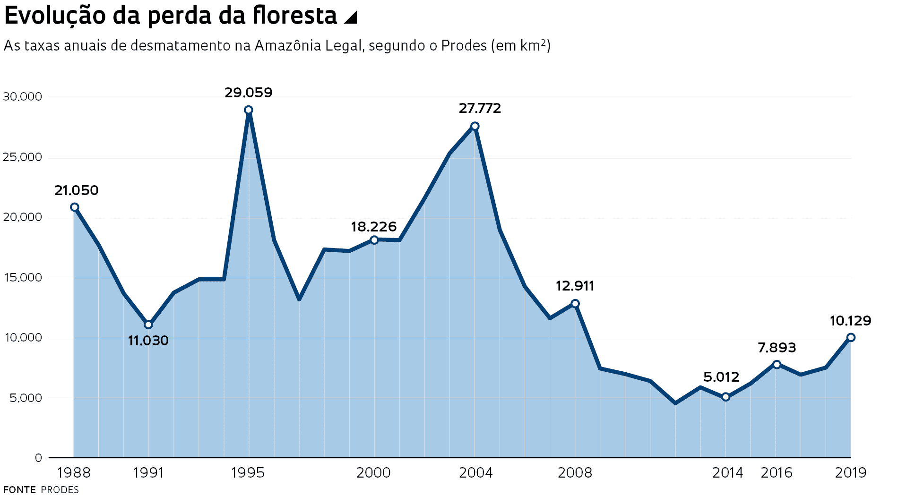

Sobre nós
O Projeto Semeie tem como foco abordar assuntos sobre a biodiversidade e mudanças climáticas no nosso planeta, visando assim tambem passar uma melhor perspectiva do que está acontecendo e o que pode vir á acontecer num futuro próximo, como evitar e melhorar a saúde da nossa faúna.
Tipos de sementes
Feijão
Girassol
Arroz
Desmatamento na Amazonia
Durante o período de 2000 a 2024, a Amazônia enfrentou um aumento alarmante no desmatamento, causado principalmente por atividades humanas, como agricultura, pecuária, mineração ilegal e invasões de terras. Esse aumento teve consequências devastadoras para a região e para o mundo em geral. Nos primeiros anos do século XXI, o desmatamento na Amazônia atingiu níveis recordes, impulsionados pelo avanço da fronteira agrícola e pela demanda global por commodities como soja e carne bovina. Políticas de incentivo econômico também contribuíram para o desmatamento, com políticas que incentivavam a expansão agrícola em áreas de floresta. Apesar dos esforços para conter o desmatamento, como a implementação de áreas protegidas e ações de fiscalização, o ritmo de destruição da floresta continuou a crescer ao longo dos anos. A falta de aplicação eficaz das leis ambientais, a corrupção e o desmatamento ilegal foram alguns dos desafios enfrentados pelas autoridades. O desmatamento na Amazônia tem sérias consequências ambientais, incluindo a perda de biodiversidade, a liberação de grandes quantidades de carbono na atmosfera, contribuindo para as mudanças climáticas, e o impacto nas comunidades indígenas e populações locais, que dependem da floresta para sua subsistência e cultura. Esforços de conscientização, políticas de conservação mais rigorosas, investimentos em alternativas econômicas sustentáveis e cooperação internacional são essenciais para enfrentar esse desafio e garantir a preservação da Amazônia para as futuras gerações.
O grafico acima mostra o crescimento do desmatamento em massa entre os anos de 1988, 1995 e 2004.
A preservação da natureza e a melhoria do planeta Terra são essenciais para o bem-estar humano e a sobrevivência de todas as formas de vida. Para alcançar esse objetivo, é crucial adotar práticas sustentáveis, promover a conservação dos ecossistemas e reduzir o impacto ambiental. Isso requer ação colaborativa de governos, empresas e indivíduos, com investimentos em energias renováveis, políticas ambientais eficazes e conscientização pública. Ao proteger e valorizar a natureza, podemos garantir um futuro mais saudável e equilibrado para todos.